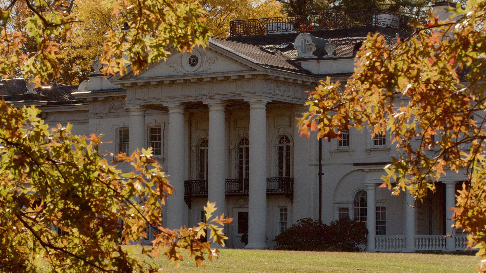
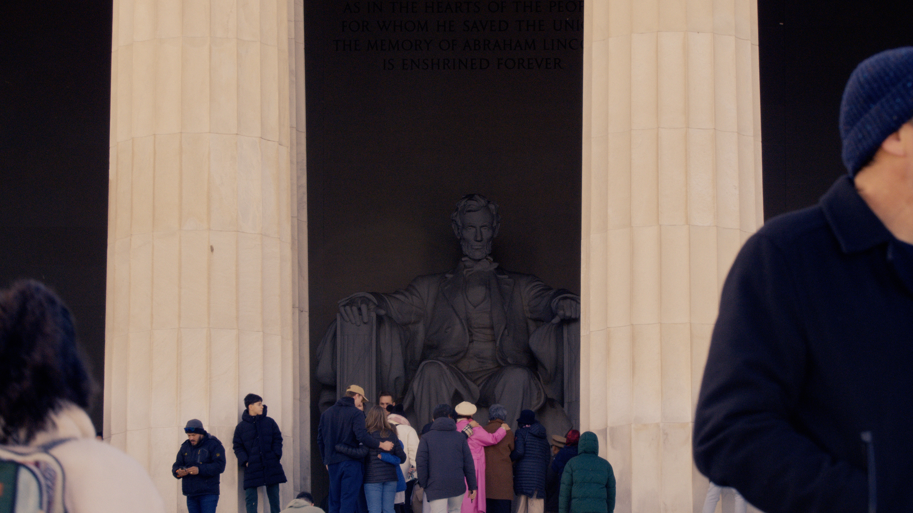
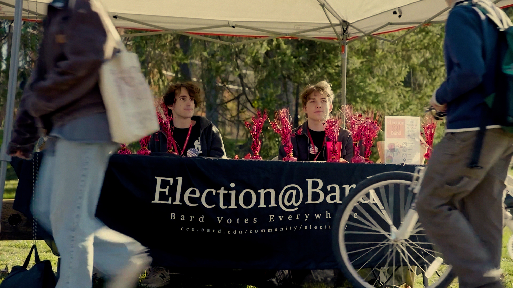

I didn't arrive at Bard planning to become an economist.
SCROLL TO BEGIN ↓
01
I always knew I wanted to do something that was intellectually challenging to me personally and also contributed to the civil society.
A lot of my path at Bard was trying to figure out what that looked like.
Until I got to Bard, I had not realized how much economic disparity exists in this country and in that economics class. You know, I thought I would be learning something about the stock market and about finance. And instead I discovered this discipline that was focused on issues like economic growth and prosperity and inequality.
And by the end of that class, I had decided I really wanted to become an economist.
One thing that's really unique about Bard is the community of students that it attracts. Both the students and the faculty reinforce the idea that there's not just one path to success.
02ARCHIVE



01/ 05
Your contribution to a greater society and your individuality in that contribution.
03
Bard
just felt
like home.
As much as I learned from the my professors at Bard, I learned as much from the students that I was surrounded with at the time.
The community at Bard is just a really special place.
I formed lasting relationships with people there that I treasure to this day.